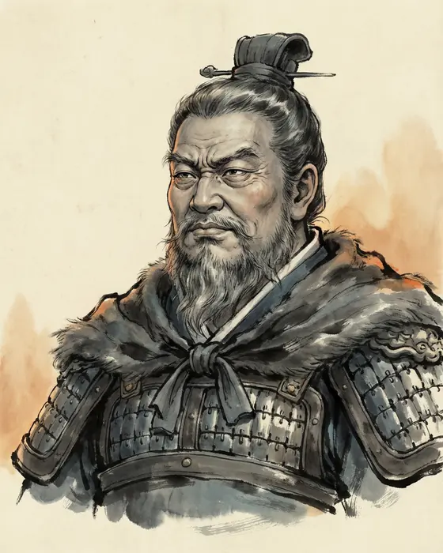

Liu Pi劉濞
d. 154 BCE
King of Wu, sixty-two in 154 BCE, son of the founder's elder brother and therefore the founder's nephew. He had coins cast from his mountains and salt boiled from his sea, had not attended court for a generation, and lost a war that lasted three months.